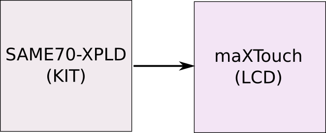
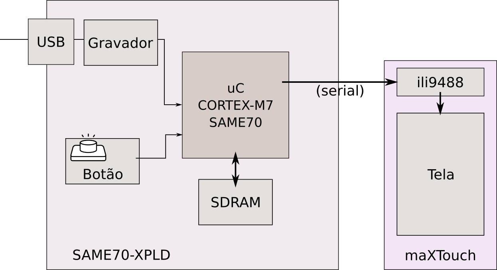
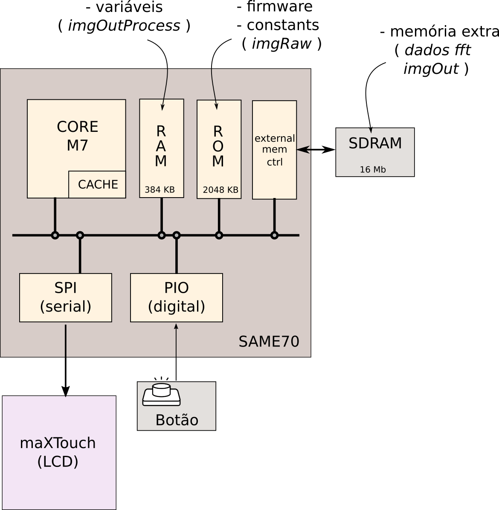

Embarcados - Parte 2
Melhorando o desempenho
Assim como qualquer sistema microprocessado podemos ajustar diversos parâmetros interno de funcionamento do microcontrolador. Sendo o clock (frequência de operação) um dos fatores que possui grande impacto na aplicação.
É natural pensarmos que quanto maior a frequência do clock maior será o gasto energético de um sistema, lembre de camada física onde vimos que o gasto energético em sistemas digitais construídos com MOSFET é:
$$ \alpha C V_{DD}^2 f $$
onde :
- $\alpha$: fator de chaveamento (influenciado pelo código)
- $C$: capacitância
- $V$: tensão de operação
- $f$: frequência de chaveamento
Portanto quanto maior a frequência de chaveamento maior será o gasto energético do sistema, mas um detalhe deve ser levado em consideração: quanto maior a frequência do clock mais rápido uma tarefa é realizada e mais rapidamente um sistema pode entrar em modo de baixo consumo energético sleep mode, suspensão, .....
Note
Recentemente o kernel do linux removeu o perfil ondemand de seus modos de operação, esse modo alterava dinamicamente a frequência de operação do processador para alta quando uma grande carga de processamento era demandada e para mais baixa quando o processador estava em baixo uso.
A ideia inicial disso era a melhoria do consumo energético já que o processador se ajustava a demanda do sistema. Porém detectou-se que isso não era verdade, já que esse modo tardava o processador de entrar no modo de sleep mais profundo além de demandar processamento para verificar a carga atual do processador.
Alterando a frequência de operação
O arquivo .h localizado em: src/config/conf_clock.h é responsável pela configuração do clock do microcontrolador. Note que no trecho de código referente ao Prescaler existem diversas opções que podem ser escolhidas, a atual está definda como:
// ===== Processor Clock (HCLK) Prescaler Options (Fhclk = Fsys / (SYSCLK_PRES))
//#define CONFIG_SYSCLK_PRES SYSCLK_PRES_1
//#define CONFIG_SYSCLK_PRES SYSCLK_PRES_2
//#define CONFIG_SYSCLK_PRES SYSCLK_PRES_4
//#define CONFIG_SYSCLK_PRES SYSCLK_PRES_8
//#define CONFIG_SYSCLK_PRES SYSCLK_PRES_16
//#define CONFIG_SYSCLK_PRES SYSCLK_PRES_32
#define CONFIG_SYSCLK_PRES SYSCLK_PRES_64
//#define CONFIG_SYSCLK_PRES SYSCLK_PRES_3
Onde Fsys é equivalente a 300Mhz. Na configuração inicial a frequência do processador é 300Mhz/64 = 4.5 MHz, altere esse trecho para a forma a seguir, selecionando a frequência do principal do uC para 300Mhz.
// ===== Processor Clock (HCLK) Prescaler Options (Fhclk = Fsys / (SYSCLK_PRES))
#define CONFIG_SYSCLK_PRES SYSCLK_PRES_1
//#define CONFIG_SYSCLK_PRES SYSCLK_PRES_2
//#define CONFIG_SYSCLK_PRES SYSCLK_PRES_4
//#define CONFIG_SYSCLK_PRES SYSCLK_PRES_8
//#define CONFIG_SYSCLK_PRES SYSCLK_PRES_16
//#define CONFIG_SYSCLK_PRES SYSCLK_PRES_32
//#define CONFIG_SYSCLK_PRES SYSCLK_PRES_64
//#define CONFIG_SYSCLK_PRES SYSCLK_PRES_3
Testando
- Compile e embarque o firmware com essa mudança.
- Verifique a nova taxa de atualização do LCD, melhorou?
Como tudo isso funciona?
Em uma visão mais geral podemos analisar o sistema como um kit de desenvolvimento e um display LCD:

Sistema detalhado
Uma análise mais detalhada do projeto pode ser visto no diagrama de blocos a seguir:

Esse projeto é implementando em um kit de desenvolvimento para microcontroladores ARM Cortex M7 do fabricante Microchip/ATMEL (a ARM não fabrica chips, somente propriedade intelectual). Esse microcontrolador é chamado de SAME70 e o kit de desenvolvimento SAME70-XPLD. O kit possui além do microcontrolador toda a infraestrutura necessária para o seu funcionamento e mais alguns periféricos que podem ser úteis no desenvolvimento de um projeto (gerenciador de energia, gravador, memória, botão, led).
Pelo diagrama detalhado nota-se que a comunicação do uC com o LCD é realizado via uma interface serial (lembra da UART de Camada Física? aqui usa-se uma outra comunicação similar chamada de SPI). No módulo do LCD um chip dedicado para o controle do display (ili9488, da mesma família do display de elementos de sistema) recebe instruções do uC e atualiza o LCD.
Note
Microcontroladores não necessitam geralmente de memória externa para o seu funcionamento, porém é a mesma deve sert utilizada quando a aplicação necessita de uma quantidade razoável de memória. No caso desse microcontrolador possui internamente "somente":
- 384 KBytes de RAM
- 2 MBytes de ROM
"somente" se compararmos com a capacidade de armazenamento de um computador, mas se compararmos com outros microcontroladores esse possui muita memória.
Essa memoria interna do uC não foi suficiente para a nossa aplicação de exemplo, tivermos que recorrer a essa memória externa (SDRAM).
microcontrolador
Podemos detalhar ainda mais o sistema se detalharmos o que está sendo usado no microcontrolador, entendendo todas as partes em uso. Pelo diagrama podemos notar os seguintes "periféricos":
- CORE M7: Unidade de processamento ARM.
- RAM: Unidade de memória que é usada durante execução (variáveis).
- ROM: Unidade de memória usada para armazenar o programa e constantes .
- External Memory Controller: Periférico responsável por gerenciar uma memória externa.
- SPI: Periférico responsável pela comunicação serial SPI e interface com o módulo LCD.
- PIO: Periférico responsável pela interface com entradas e saídas digitais (Parallel Input/OutPut).
.
Firmware
O arquivo principal desse projeto é o main.c (é muito comum em C a função main() estar no arquivo main.c, mas não é necessário), esse código fonte possui a função main() que é a primeira a ser chamada na inicialização do sistema. Nessa função inicializa-se primeiro o sistema embarcado e seus periféricos (clock, LCD, botão, memória) via a chamada de função initBoardMutirao(). Após inicializado a placa chama-se a função imgshow(...) que possui toda a parte responsável por exibir a imagem no LCD.
Trecho do arquivo main.c
int main(){
uint32_t time; // variavel para armazenar tempo de processamento
uint8_t imageSelect = 1; // variavle para selecao da imagem a ser exibida
// quando o botao for pressionado
// 1 = imagem processada
// 0 = imagem orignal
// inicializa placa e seus perifericos
initBoardMutirao();
// exibe imagem orignal, tempo de processamento suprimido.
imgShow(imgRaw, 0);
...
A função imgShow possui dois parâmetros: a imagem image[320][320] a ser exibida, passada como uma matriz de tamanho já definido, e o tempo de processamento a ser exibido no LCD:
void imgShow(ili9488_color_t image[320][320], uint32_t time){...}
Após essa etapa o microcontrolador entra em um loop infinito (while(1){}) que verifica uma variável chamada de buttonFlag que é alterada via uma interrupção para o valor 1 sempre que o botão for pressionado.
// super loop
// aplicacoes embarcadas não devem sair do while(1).
while (1) {
// se buttonFlag = 1 existe alteracao no estado do botao
if(buttonFlag){